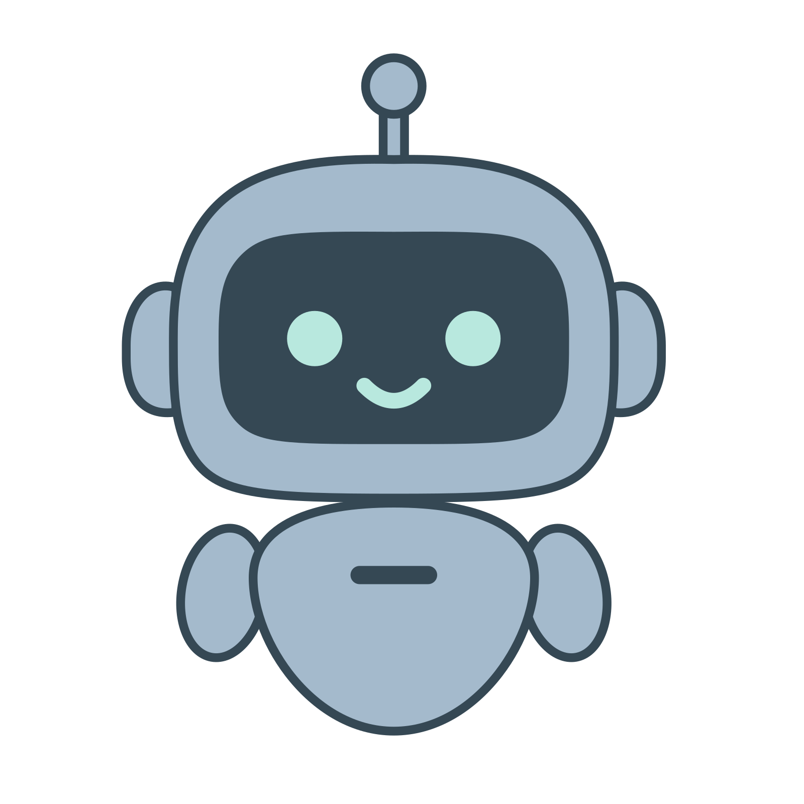
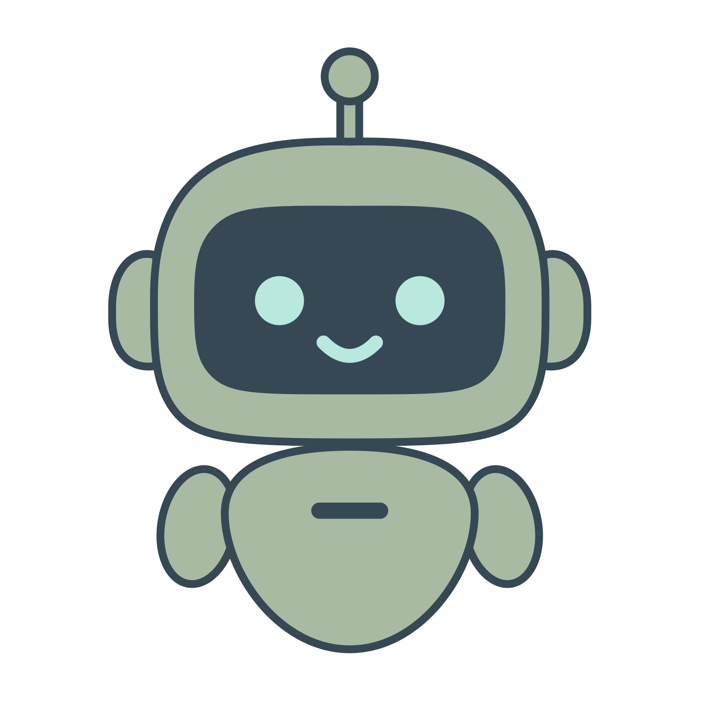

How it works

STEP 1
Find a target
the part of the codebase worth optimizing

STEP 2
Build a fast yardstick
a proxy that scores an edit in seconds
STEP 3
Verify on the real test
a fidelity test accepts a gain only if the real evaluation agrees
Abstract
Most optimization frameworks assume candidates can be evaluated cheaply over many iterations.
In practice, a single true evaluation (a full benchmark or serving trace) can take hours, so a
search affords only a handful. When evaluation is the bottleneck, search must discover both a
promising target to optimize and an inexpensive way to measure progress on it.
In DuoDiscover, each agent co-discovers a target and builds a low-cost proxy for it
(its yardstick), then optimizes against the yardstick rather than the true evaluation. A
fidelity test continually checks that each yardstick still ranks edits like the true
objective and drops any that drift, and every gain is confirmed on the true evaluation. The orchestrator
is lightweight: it spawns, stops, and combines agents' confirmed work, but it never assigns their
targets; each agent chooses what to optimize.
Highlights
0%
fewer real evaluations
13 vs 76 for Claude Code
Authors
BibTeX
@article{duodiscover,
title = {DuoDiscover: Code Optimization by Jointly Discovering What to Optimize and How to Evaluate},
author = {Agarwal, Shubham and Gupta, Akshat and Heddes, Mike and Soylu, Dilara and others},
year = {2026},
note = {Google, UC Berkeley, Stanford University}
}